+91 86886 69407 Export Enquiries Welcome!
Premium Basmati Rice
Sona Masoori Rice
Guntur Red Chilli
Teja Red Chilli
Arabica Coffee Beans
Robusta Coffee Beans
Fresh Red Onions
Fresh Green Chillies
Whole Spices
Spice Powders
Premium Pomegranates
Export Grade Mangoes
Premium Basmati Rice
Sona Masoori Rice
Guntur Red Chilli
Teja Red Chilli
Arabica Coffee Beans
Robusta Coffee Beans
Fresh Red Onions
Fresh Green Chillies
Whole Spices
Spice Powders
Premium Pomegranates
Export Grade Mangoes
Domestic Supply
Domestic Products
Premium quality agro-commodities supplied across India — trusted by wholesalers, millers, distributors, and retailers nationwide.
Rice Varieties
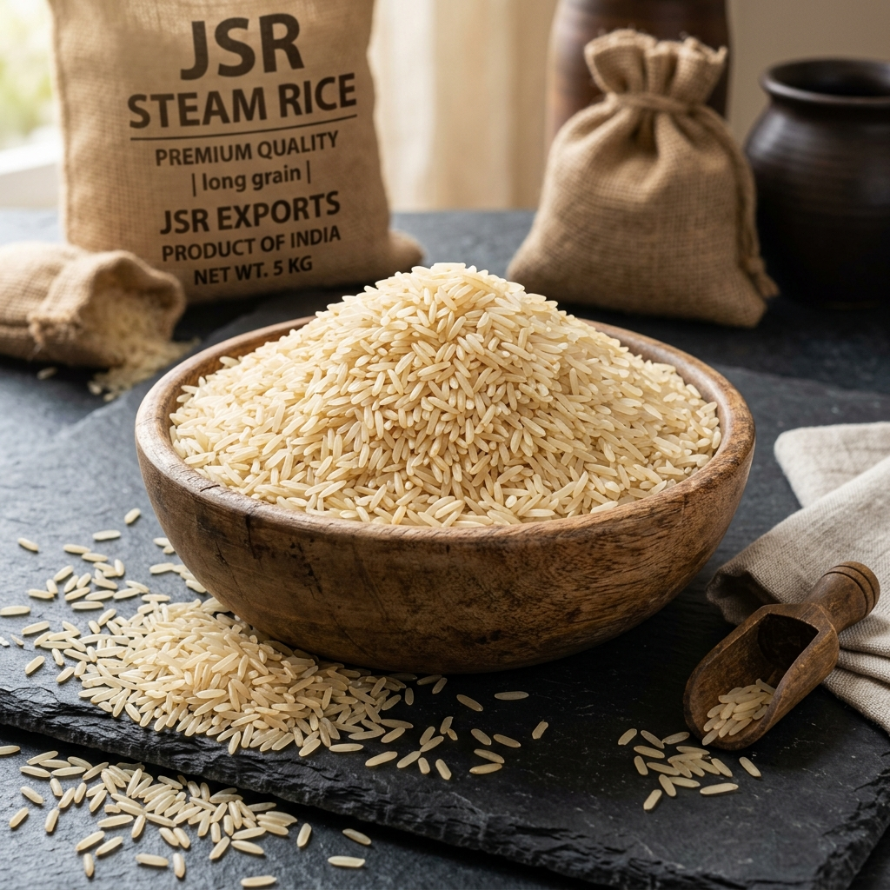
JSR Steam Rice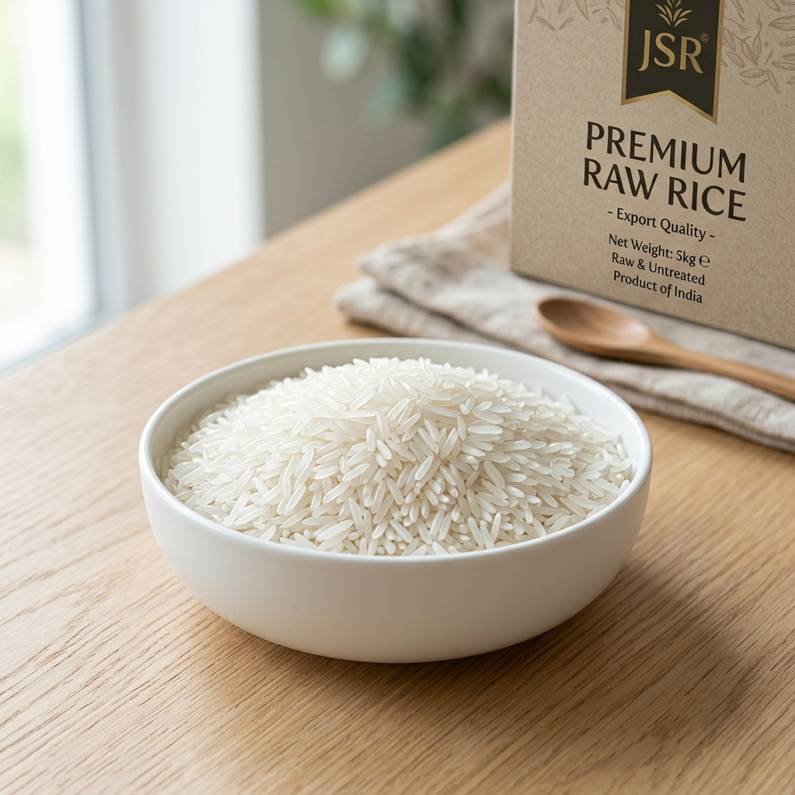
JSR Raw Rice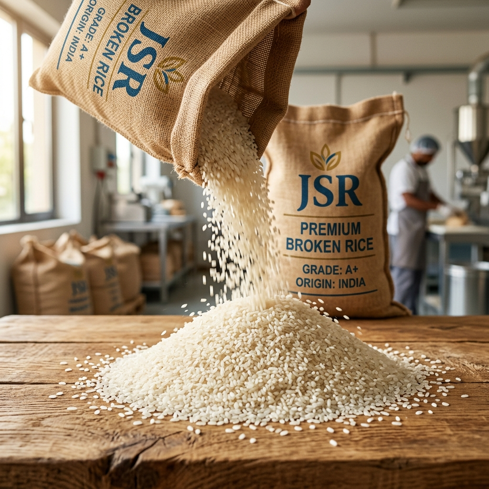
JSR Broken Rice
Rice · Domestic
Enquire Now
JSR Rice (Steam, Raw & Broken)
JSR rice is one of India's most popular medium-grain rice varieties, widely cultivated in Andhra Pradesh and Telangana. Available in three premium grades — Steam, Raw, and Broken — it is prized for its fluffy texture, consistent grain size, and natural aroma after cooking. Ideal for daily consumption, hotel industry bulk supply, and rice flour milling applications. We supply both polished and semi-polished varieties with FSSAI-compliant packaging.
JSR Steam Rice
Our premium JSR Steam Rice is processed using an advanced hydrothermal method that parboils the grain while it is still in its husk. This intricate process locks in essential vitamins and minerals, resulting in a grain that is not only highly nutritious but also exceptionally firm and non-sticky after cooking. When boiled, the grains expand significantly in length, making it a high-yield choice for commercial kitchens, hotels, and large-scale catering events. It is widely recognized for its consistent white texture, superior digestibility, and long shelf-life, making it one of our most demanded export-quality products for both domestic and international wholesalers.
JSR Raw Rice
JSR Raw Rice represents the purest form of the grain, freshly milled directly from the harvest without any heat or steam treatment. This traditional milling method preserves the natural, delicate aroma and the distinctively sweet flavor profile that JSR rice is famous for across South India. Because it is un-steamed, the grains retain a natural translucency and a soft, tender bite that is highly favored for authentic home-style meals and daily consumption. We source this directly from certified farmer clusters, ensuring that every bag contains polished, dust-free grains that meet the highest FSSAI food safety standards, providing families with a healthy and delicious staple.
JSR Broken Rice
Our JSR Broken Rice is a premium grade of broken grains that occur naturally during the high-speed milling and polishing process. Despite being smaller in size, these grains retain 100% of the same nutritional content, aroma, and flavor as the whole-grain JSR variety, offering a highly economical solution for both household and industrial use. It is the preferred choice for preparing traditional fermented batters like Idly and Dosa, as the smaller grain size facilitates faster soaking and smoother grinding. Additionally, it is widely utilized by food processing industries for making rice flour, snacks, and traditional desserts like Kheer, providing exceptional value without compromising on authentic quality.
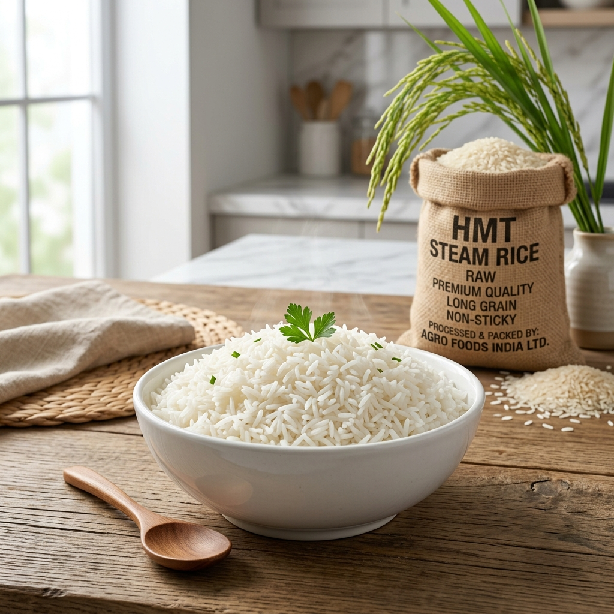
HMT Steam Rice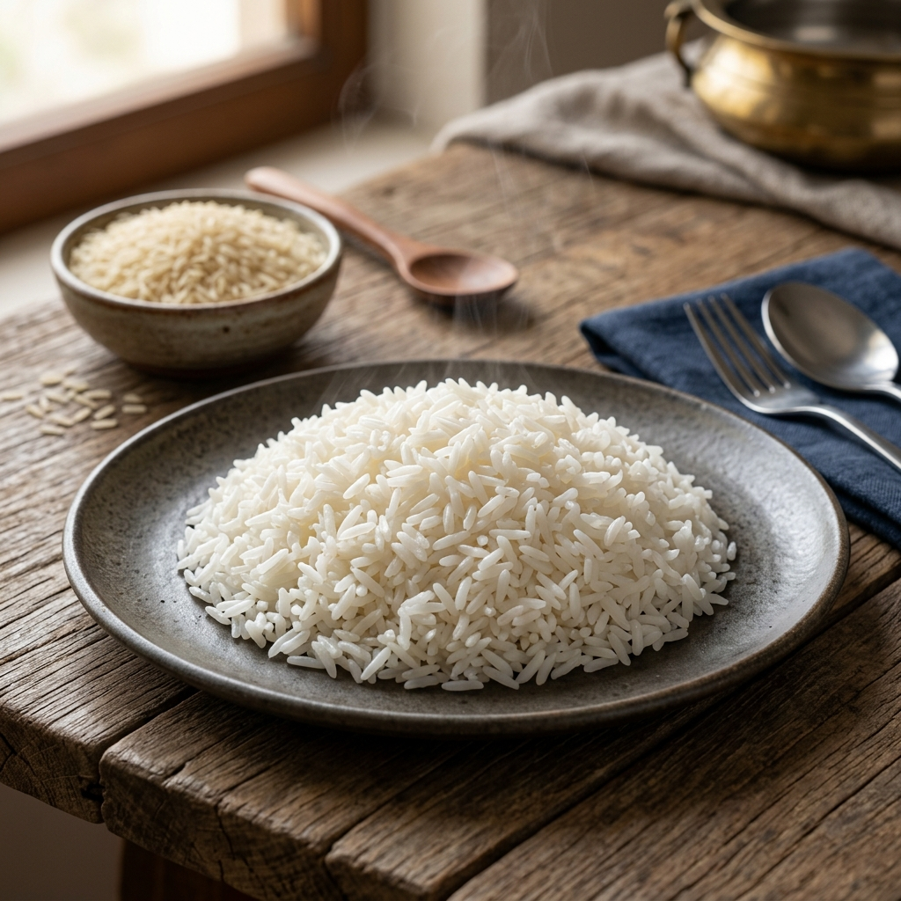
RNR Steam Rice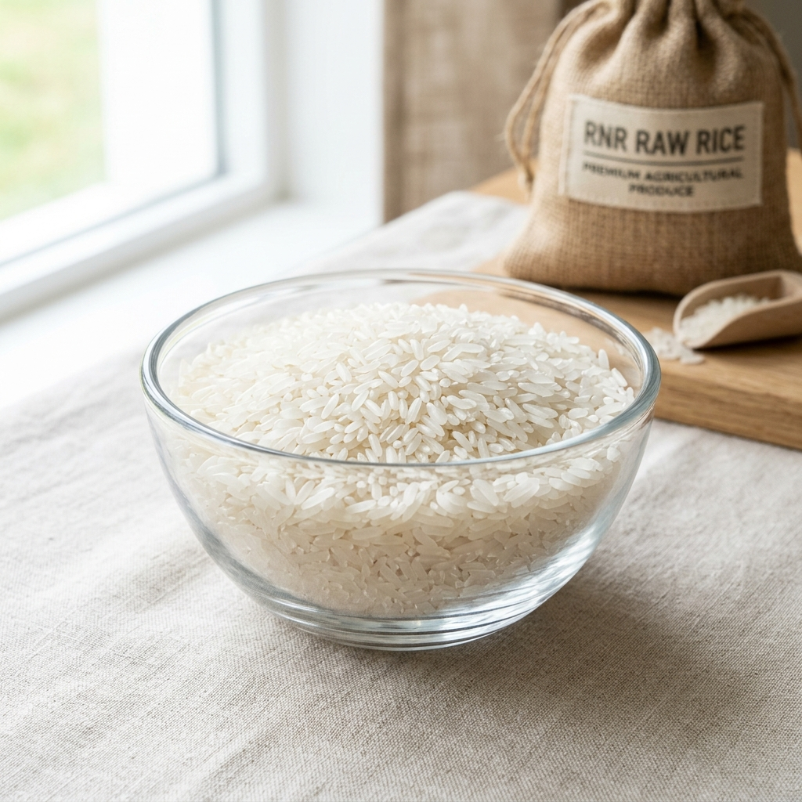
RNR Raw Rice
Rice · Domestic
Enquire Now
HMT & RNR Rice (Steam & Raw)
HMT (Hemavathi) and RNR rice are premium varieties known for their soft texture, low glycaemic properties, and high nutritional value. HMT Steam is a favourite in the hotel industry for its excellent cooking consistency, providing a fluffy and separate grain texture that stays fresh for hours. RNR rice — also called "Nela Ponni" — is a breakthrough diabetic-friendly rice variety with superior taste and low starch content, making it the perfect choice for health-conscious consumers. Both varieties undergo rigorous quality checks during procurement and processing, ensuring that they are free from impurities and broken grains. We supply these in bulk quantities to wholesalers, government schemes, and large-scale distributors across the country, maintaining a steady supply chain throughout the year.
HMT Steam Rice
Our HMT Steam Rice is a premium variety known for its exceptional soft texture and high nutritional retention, achieved through a controlled hydrothermal steaming process. This treatment ensures that the grains remain firm and separate after cooking, making it an absolute favorite in the hotel and catering industries for preparing high-yield, consistent meals. The grains are easily digestible and possess a subtle, pleasant aroma that enhances the flavor of any dish they accompany. We source this variety from specialized growing regions where the soil imparts a unique character to the grain, resulting in a product that meets the most stringent quality standards for both domestic supply and large-scale commercial distribution.
RNR Steam Rice (Diabetic Friendly)
RNR Steam Rice, also widely recognized as "Nela Ponni," is a breakthrough agricultural variety specifically bred for its low glycemic index and high dietary fiber content. Our steam-processed RNR grains are ideal for health-conscious consumers and diabetic individuals who do not want to compromise on the authentic taste and texture of premium Indian rice. The steaming process locks in the natural goodness of the grain while ensuring a superior volume expansion during cooking, providing a satisfying and nutritious meal. We implement a rigorous polishing and grading process to ensure that every bag contains clean, uniform grains that are free from any dust or impurities, making it a highly reliable choice for daily family consumption.
RNR Raw Rice
Our RNR Raw Rice is the natural, un-processed version of the diabetic-friendly Nela Ponni variety, prized for its pure, translucent appearance and delicate starch profile. Because it is not subjected to any heat treatment before milling, it retains the maximum natural vitamins and a soft, traditional bite that is highly favored in home-style cooking across South India. It is exceptionally easy on the digestive system and provides a clean, neutral base that absorbs the flavors of curries and lentils perfectly. We source our RNR Raw rice directly from certified farmer clusters who follow sustainable agricultural practices, ensuring that every grain is harvested at peak maturity and processed to maintain its natural nutritional integrity and white shine.
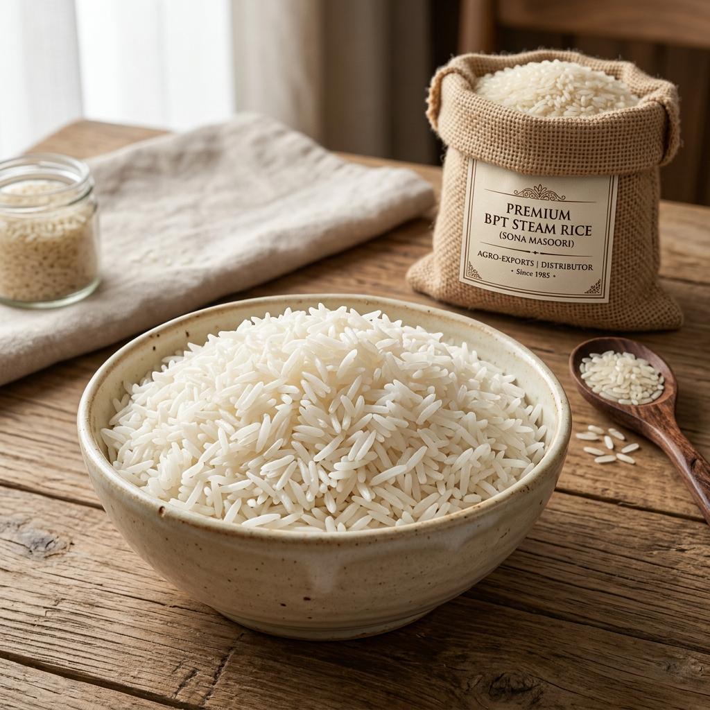
BPT Steam Rice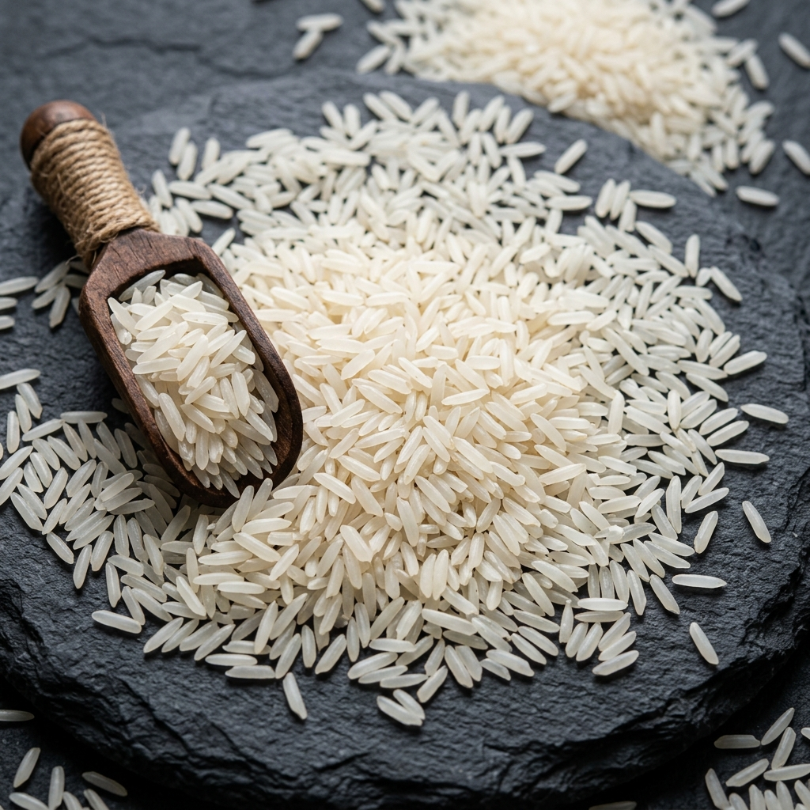
BPT Raw Rice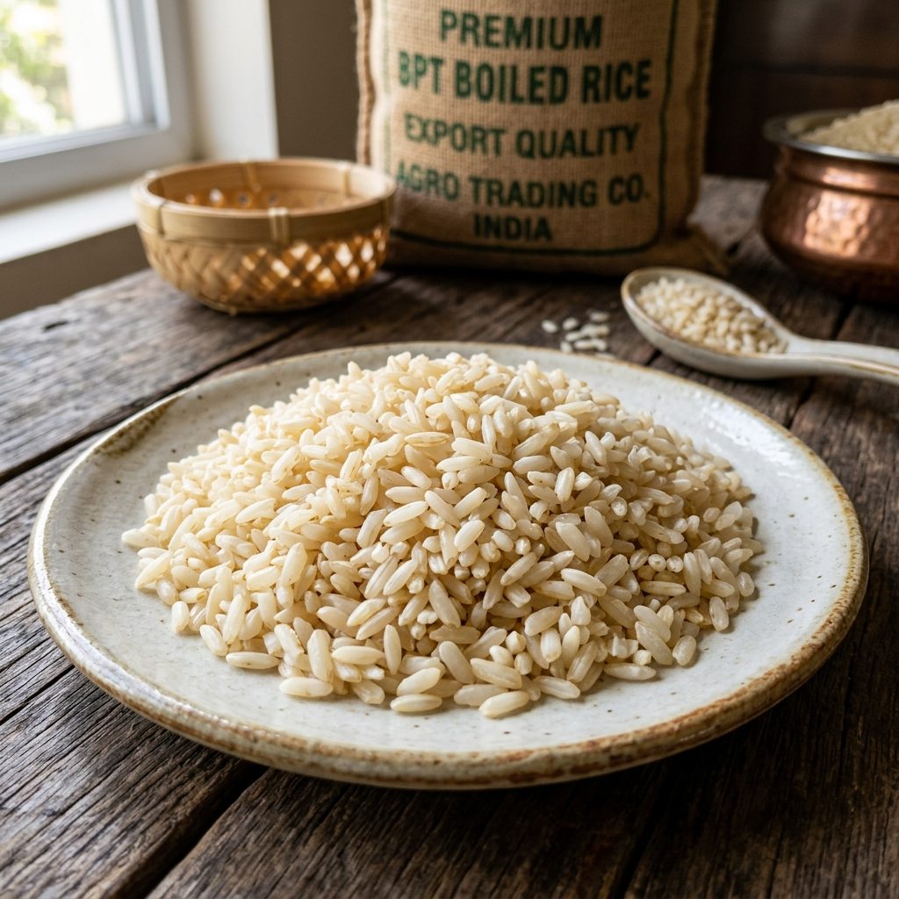
BPT Boiled Rice
Rice · Domestic
Enquire Now
BPT & KNM Rice (Steam, Raw & Boiled)
BPT (Sona Masoori) is one of India's most recognised premium rice brands — lightweight, aromatic, and widely used for everyday meals, biryanis, and traditional South Indian idlis. KNM (Kurnool) rice is another fine-grain variety prized for its delicate taste, white shine, and smooth texture after cooking. We source these varieties from the fertile rice belts of Kurnool and surrounding regions, ensuring that only the finest aged grains reach our processing units. Both BPT and KNM are available in Steam, Raw, and Boiled grades to cater to diverse culinary preferences and commercial requirements. Our state-of-the-art milling facilities ensure that every grain is polished, dust-free, and graded by size, meeting the stringent quality standards required for retail, institutional, and bulk buyers nationwide.
BPT Steam Rice (Sona Masoori)
Our BPT Steam Rice, often referred to as premium Sona Masoori, is processed using advanced steam technology that parboils the grain within its husk to lock in essential vitamins and minerals. This hydrothermal treatment results in a grain that is not only highly nutritious but also possesses a superior, non-sticky texture that is ideal for daily household meals and professional catering. The grains are lightweight and easy to digest, making it one of the most popular rice varieties across South India for various traditional preparations. We ensure that every batch is aged for the appropriate duration to achieve the perfect balance of moisture and aroma, providing a consistent cooking experience that our customers have come to trust for years.
BPT Raw Rice
BPT Raw Rice is the natural, un-steamed version of the famous Sona Masoori variety, celebrated for its translucent appearance and soft, delicate bite after cooking. It is a lightweight, medium-grain rice that is versatile enough for everything from simple steamed rice to complex biryanis and specialized South Indian festive dishes. Because it is raw, it retains the pure, natural flavor of the grain and is preferred by those who enjoy a more traditional, soft-textured meal that absorbs spices and lentils effortlessly. We maintain a strict procurement process from the fertile plains of Kurnool and Telangana, ensuring that our BPT Raw rice is free from impurities and meets the highest standards of purity and white shine for our domestic and retail partners.
BPT Boiled Rice
Our BPT Boiled Rice is specifically processed to achieve a firm grain structure and enhanced nutritional value, making it an excellent choice for those who prefer a more robust texture in their meals. The boiling process partially gelatinizes the starch within the grain, which helps it remain firm and separate even after prolonged cooking or storage, which is a key requirement for large-scale institutional kitchens and mass catering events. It is widely used for preparing traditional South Indian idlies and dosas when ground into a batter, as well as for daily consumption in regions that favor a heartier rice variety. Every bag of our BPT Boiled rice is multi-stage polished and graded to ensure that it is clean, dust-free, and ready for immediate culinary use in both domestic and commercial environments.
Flour & Grain Products
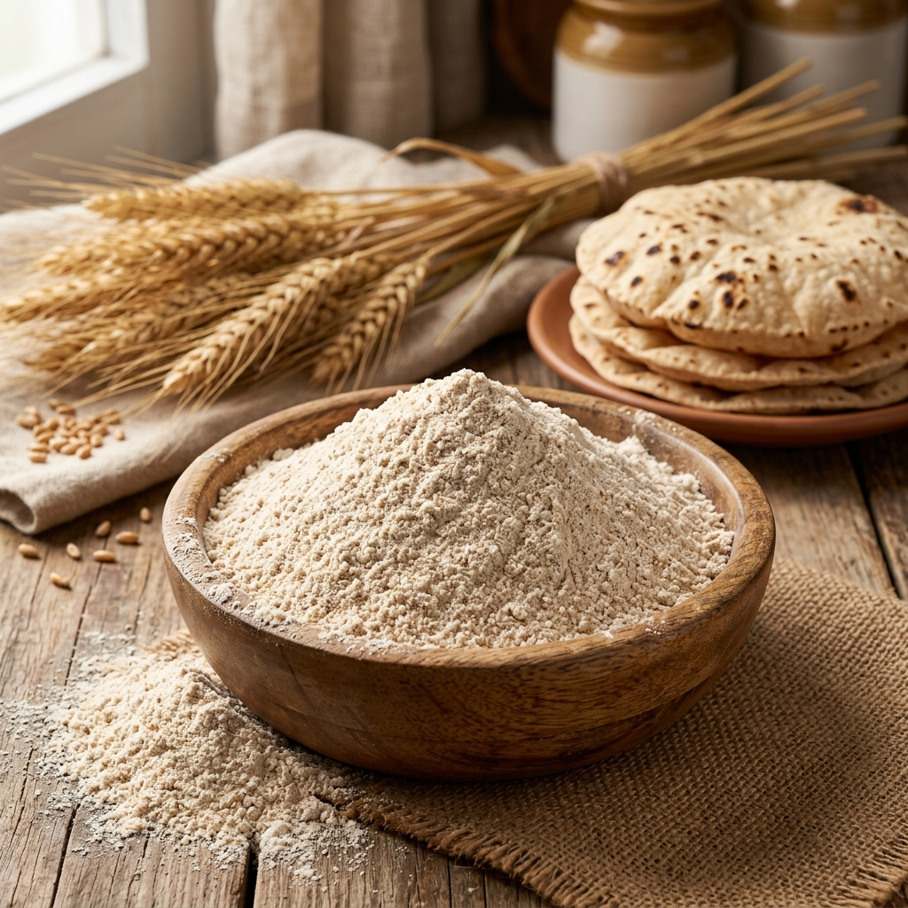
Premium Wheat Atta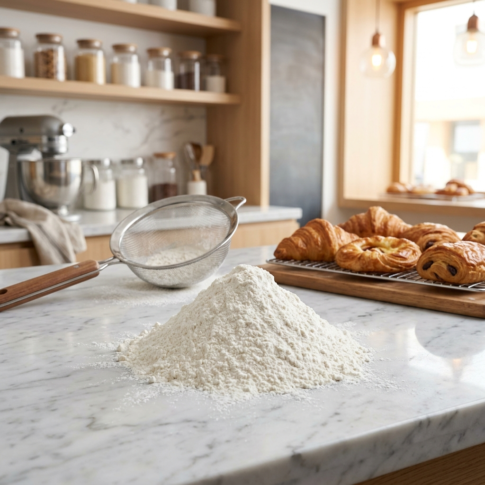
Refined Maida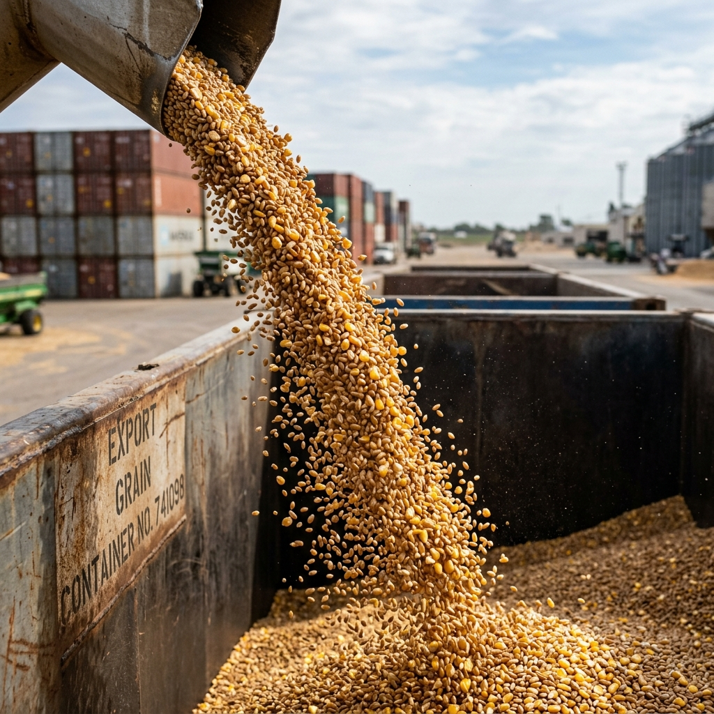
Premium Idly Ravva
Flour & Grains · Domestic
Enquire Now
Wheat Flour, Maida & Idly Ravva
We supply a high-quality range of milled grain products to bakeries, luxury hotels, sweet shops, and large-scale food manufacturers across India. Our Wheat Flour (Atta) is stone-milled from premium hard wheat varieties to ensure maximum nutritional retention and superior gluten strength for soft rotis and parathas. Maida (Refined Flour) is multi-stage refined to achieve an ultra-fine texture perfect for professional pastries, breads, and confectionery products. Our Idly Ravva (Cream of Rice) is available in both soft and medium grades, freshly milled from premium rice to ensure the perfect consistency for authentic South Indian idlies. All our flour products are hygienically processed in controlled environments and are available in various packaging sizes, from 5 kg retail packs up to 50 kg industrial bags, ensuring freshness and quality in every batch.
Wheat Flour (Atta)
Our premium Wheat Flour (Atta) is stone-milled from the finest hard wheat varieties sourced directly from the fertile belts of North India, ensuring maximum retention of natural nutrients and dietary fiber. The milling process is carefully monitored to achieve a uniform texture that produces exceptionally soft and nutritious rotis, parathas, and breads for both household and commercial kitchens. We ensure that our Atta is free from any additives or artificial whitening agents, maintaining the pure, earthy flavor of the grain in every batch. Available in moisture-resistant packaging to preserve freshness, our wheat flour is a staple choice for health-conscious families and professional caterers who demand the highest quality standards.
Maida (Refined Flour)
Our Maida (Refined Flour) is multi-stage processed and finely sifted to achieve an ultra-smooth, lightweight texture that is essential for professional baking and traditional Indian confectionery. It is highly prized by gourmet bakeries and luxury hotels for its superior gluten strength and consistency, making it the perfect base for everything from airy pastries and breads to crispy samosas and sweets. We utilize advanced temperature-controlled milling to ensure that the flour remains cool during processing, which prevents the loss of its natural binding properties. Every bag is rigorously tested for its moisture content and purity, ensuring that it meets the strict technical specifications required for large-scale industrial food manufacturing and artisanal baking.
Idly Ravva (Cream of Rice)
Our Idly Ravva (Cream of Rice) is freshly milled from premium parboiled rice to ensure the perfect granular consistency required for authentic, fluffy South Indian idlies. It is available in both soft and medium grades to cater to the specific culinary preferences of our diverse B2B clients, including restaurants, hotels, and mass catering facilities. The grains are cleaned and graded using high-precision machinery to ensure they are free from any dust or black specks, resulting in idlies that are pure white and incredibly aerated. We maintain a strict supply chain that guarantees the freshness of our Idly Ravva throughout the year, making it a reliable and high-value commodity for both domestic retail and institutional supply.